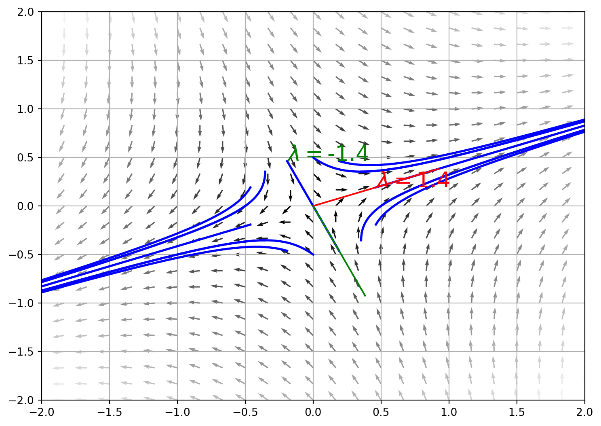
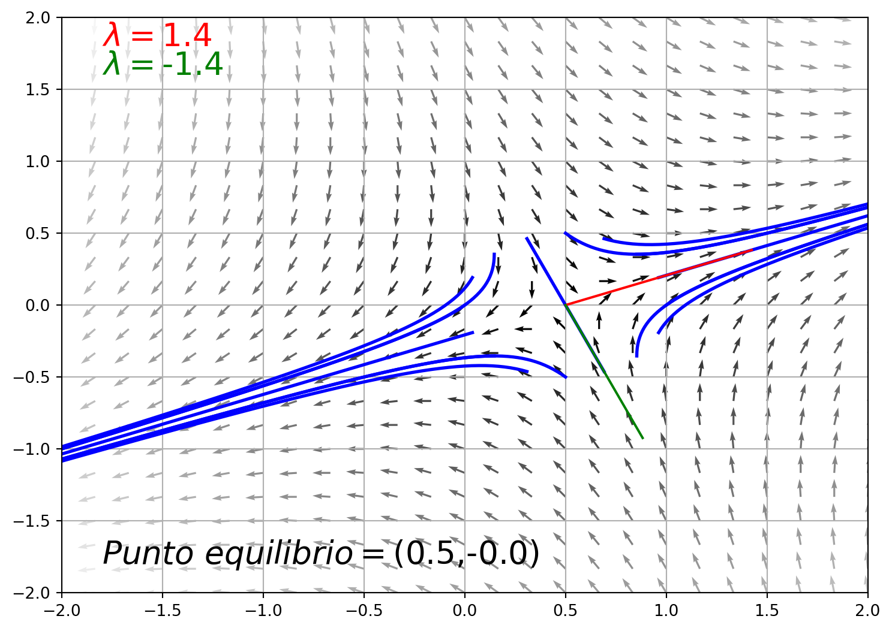

"\n\n\n\n for i in range(N):\n x, y, z = x_t[i,:,:].T\n lines = ax.plot(x, y, z, '-', c=colors[i])\n plt.setp(lines, linewidth=2)\n"Sistema de ecuaciones diferenciales
Aquí analizaremos un sistema de ecuaciones diferenciales, el cual se puede escribir como:
\[\begin{cases} \dot{x}=ax+by \\ \dot{y}=cx+dy\end{cases}\] donde \(a,b,c,d\) son constantes. Este sistema se puede escribir de forma resumida como: \[\frac{\partial x}{\partial t}=F(x)\]
Note
Se dice que un sistema de ecuaciones diferenciales es autonómo si las ecuaciones no dependen explícitamente del tiempo. Es decir \(F(x)\) sólo depende de \(x\).
El estudio de un sistema de ecuaciones diferenciales se puede hacer de varias formas, una de ellas es mediante el análisis de las trayectorias que siguen las soluciones del sistema. Para esto, se puede analizar el campo vectorial que se genera a partir de las ecuaciones diferenciales, con el fin de estudiar \(x(t)\) y \(y(t)\) cuando el tiempo es muy grande.
Note
Punto de equilibrio: Es un punto del espacio de fase en el cual el campo vectorial es nulo. Es decir \(F(x,y)=0\).
# Ejemplo
Sea el sistema de ecuaciones diferenciales: \[\begin{cases} \dot{x}=x+y \\ \dot{y}=x-y\end{cases}\] Este sistema se puede escribir de forma resumida como: \[\frac{\partial x}{\partial t}=Ax\] donde \(A=\begin{bmatrix} 1 & 1 \\ 1 & -1 \end{bmatrix}\). y \(x\) es un vector de dos componentes: \(x=\begin{bmatrix} x_1 \\ x_2 \end{bmatrix}\). El polinomio característico de la matriz \(A\) es: \[\lambda^2-Traz(A)\lambda+det(A)=0,\] \[\lambda^2-2=0,\] De aquí que los autovalores de la matriz \(A\) son: \[\lambda_1=\sqrt{2}\] y \[\lambda_2=-\sqrt{2}\] Note que este sistema es diagonalizable. Además el sistema es autónomo, ya que no depende explícitamente del tiempo, y tiene un puntos de equilibrio: \((0,0)\).
Para hacer el diagrama de fase debemos para el caso diagonalizable:
Calcular el campo vectorial del sistema de ecuaciones diferenciales, para ello usamos la función de flujo: \[F(x,y)=\begin{bmatrix} x+y \\ x-y \end{bmatrix}\]
Calcular las trayectorias de las soluciones del sistema de ecuaciones diferenciales,las cuales son tangentes a los vectores del campo vectorial.
Calcular los puntos de equilibrio del sistema de ecuaciones diferenciales.

La clasificación de un sistema de ecuación diferencial lineal con coeficientes constantes depende de sus autovectores y esto puede determinar su flujo
El análisis de los autovectores de un sistema de ecuaciones diferenciales lineales con coeficientes constantes nos permite clasificar el sistema en uno de los siguientes tipos:
- Diagolaizable con autovalores reales
- Diagonalizable con autovalores complejos
- No diagonalizable
para ver el diagrma de fase de algunos sistemas lineales con coeficientes constantes homogeneo, puede consultar el siguiente enlace
Sistemas de ecuaciones diferenciales lineales con coeficientes constantes estables
Note
Se dice que un sistema de ecuaciones diferenciales lineales con coeficientes constantes es estable si todos sus autovectores tienen parte real negativa.
Vamos estudiar el sistema de ecuaciones diferenciales lineales con coeficientes constantes de la forma:

\[\frac{d x}{dt}=Ax+B,\] donde \(A\) es una matriz cuadrada de orden \(2\) y \(B\) es un vector columna de orden \(2\).
Para estudiar la estabilidad de este sistema, se debe estudiar los autovalores de la matriz \(A\) y los autovectores de la matriz \(A\). Note que el diagrma de fase es similar al de un sistema de ecuaciones diferenciales lineales con coeficientes constantes homogeneo, es translado al punto crítico.
para ver el diagrma de fase de algunos sistemas lineales con coeficientes constantes no homogeneo, puede consultar el siguiente enlace